In the digital entertainment industry, automated genre classification plays a pivotal role in organizing content libraries, enhancing user experience through recommendation systems, and enabling better content discovery. Traditional genre classification using unimodal approaches, particularly based on text, has had success, especially when reliable metadata is available. In this project, we focused on a text-based multi-label classification system to predict genres of movies based on their textual metadata, particularly the movie overview.Using this approach, the model attempts to assign one or more genres (such as Action, Comedy, Drama, etc.) to each movie. Unlike unimodal fusion systems, this baseline text-only model sets the foundation for future comparisons with multimodal models (e.g., text + image fusion).
Project Goals: The primary objectives of this text-based genre classification project are:
- To collect and clean a movie metadata dataset using the TMDb API.
- To extract poster images alongside text metadata for extended use.
- To perform exploratory data analysis on the overview and genre fields.
- To implement NLP preprocessing pipelines for movie overview text.
- To train and evaluate a deep learning model (LSTM-based) on the genre prediction task.
- To establish baseline performance metrics to be compared with more advanced multimodal models.
Data Collection and Preprocessing
Our dataset was curated from the TMDb (The Movie Database) API using Python scripts. Initially, we collected core movie metadata such as:
- Movie Title
- Overview (plot summary)
- Genres
- Poster Path
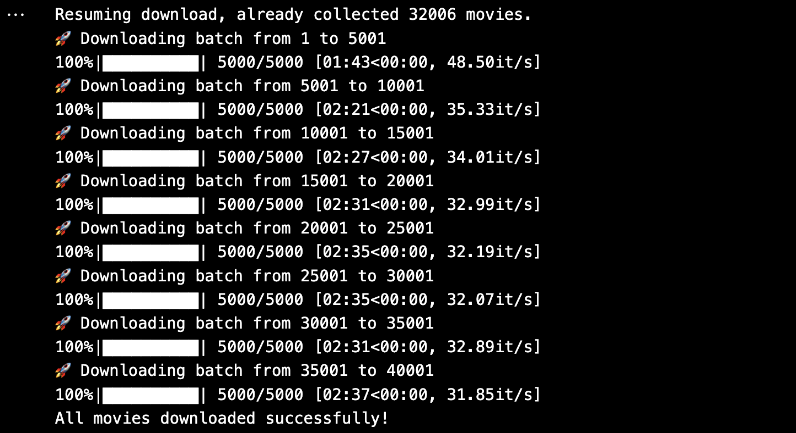
After dropping empty rows or values, we got:
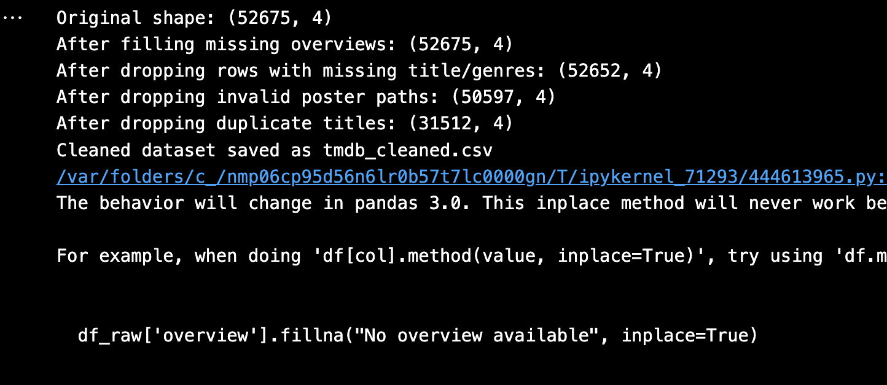
However, during early training stages, we discovered that overviews alone were not descriptive enough for genre prediction, especially for movies with vague or generic plots. This led us to extract an additional field: Taglines, which are short promotional phrases (e.g., “The world will be watching”).
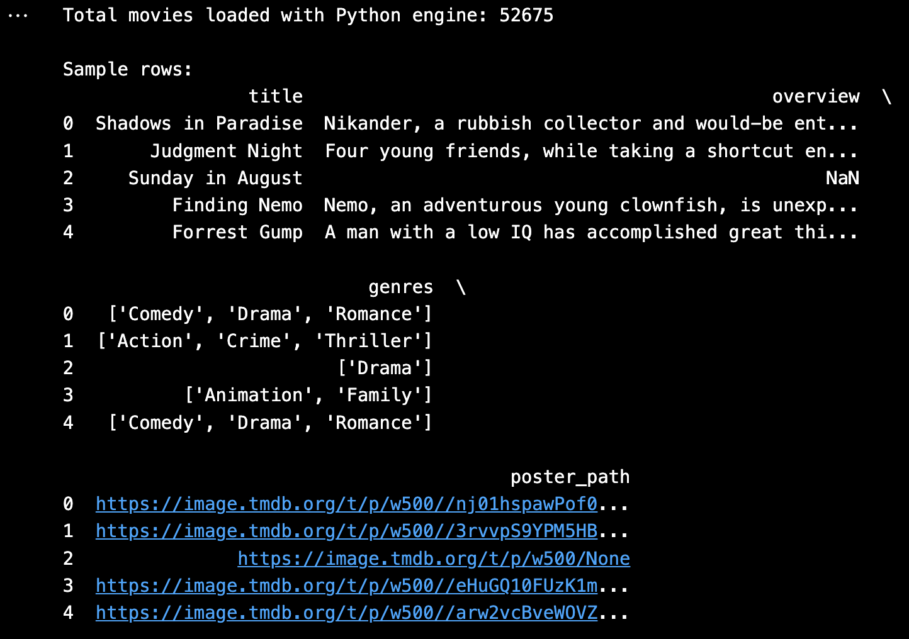
We augmented our dataset by:
- Re-querying TMDb API to fetch taglines for all movies
- Removing entries with missing taglines
- Dropping movies with null or empty overviews, genres, or poster paths
- Standardizing and combining overview + tagline for improved input quality
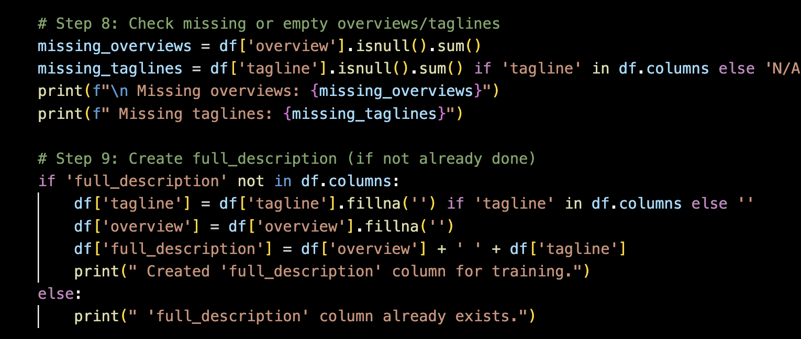
After filtering, the final dataset size was reduced to approximately 21,554 high-quality samples with complete overview, tagline, genre labels, and poster paths.
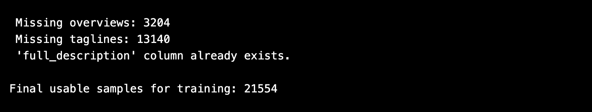
Genre Label Refinement
The original genre list contained 20+ labels, including many with extremely low frequency (e.g., Western, War, History, TV Movie). To improve model learning and generalization, we:
- Analyzed genre frequency distribution
- Merged low-frequency or overlapping genres into a new class: "Others"
- Finalized a cleaned set of 12 genre labels suitable for classification
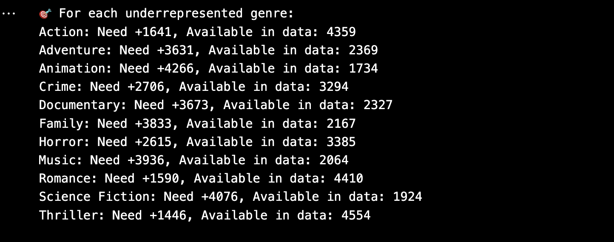
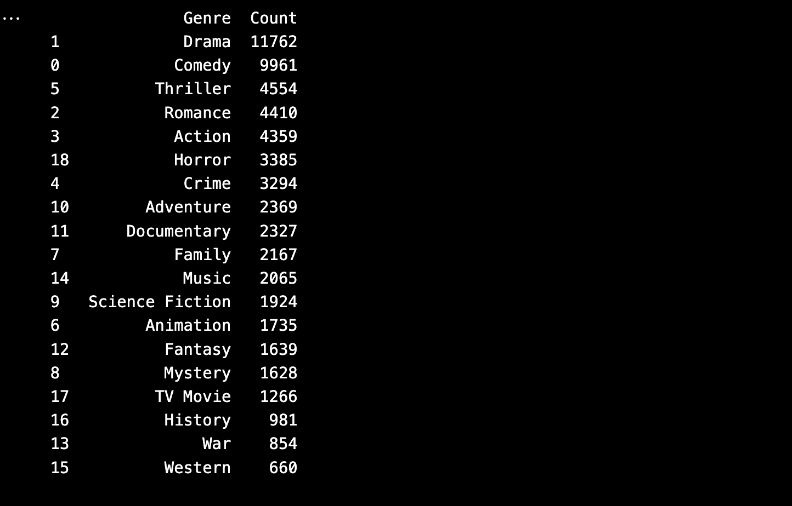
→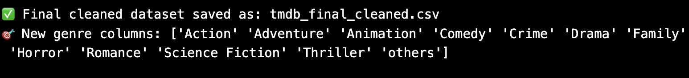
Data Cleaning Process
- Duplicates Removed: Ensured that duplicate movie IDs or titles were dropped
- Null Handling: Removed rows with missing genres, overview, tagline, or posters
- Poster Verification: Checked if the poster was actually downloaded and readable using PIL
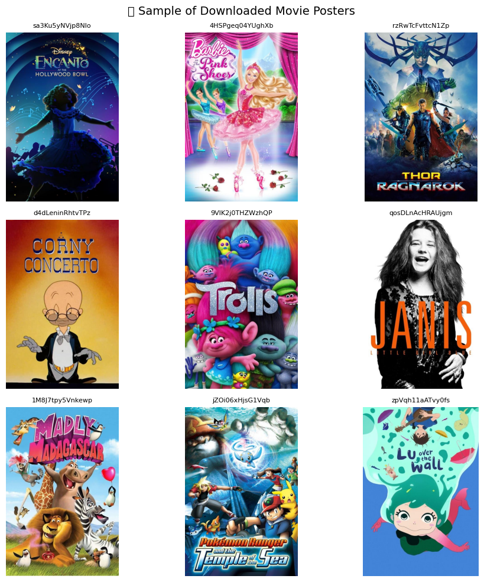
Exploratory Data Analysis (EDA)
- Genre Frequency Plot: Highlighted the overrepresentation of Drama, Comedy, and Action
- Genre co-occurence heatmap Visualized genre co-occurence before and after balancing data
- Multi-Label Distribution: Found the average number of genres per movie to be 2.36
- principal component analysis of genre vectors:
- Overview Length: Analyzed token counts and filtered extreme cases
- Genre co-occurence network Visualized genre co-occurence network before and after balancing data
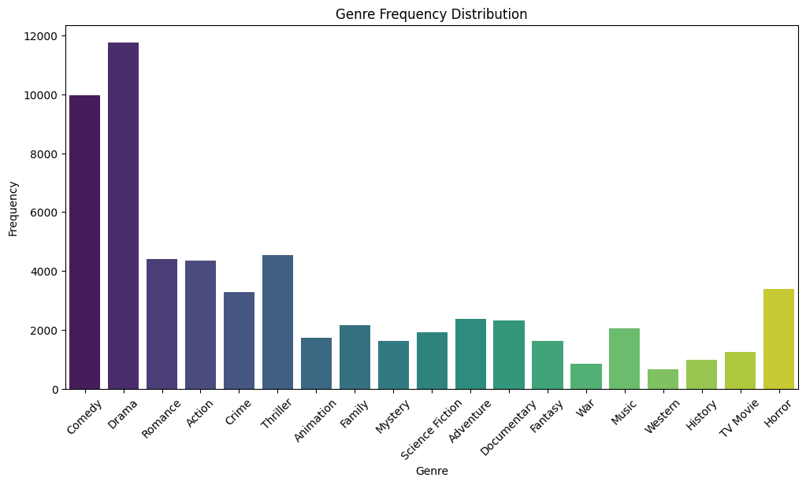
→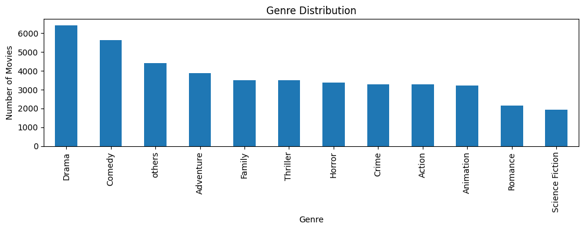
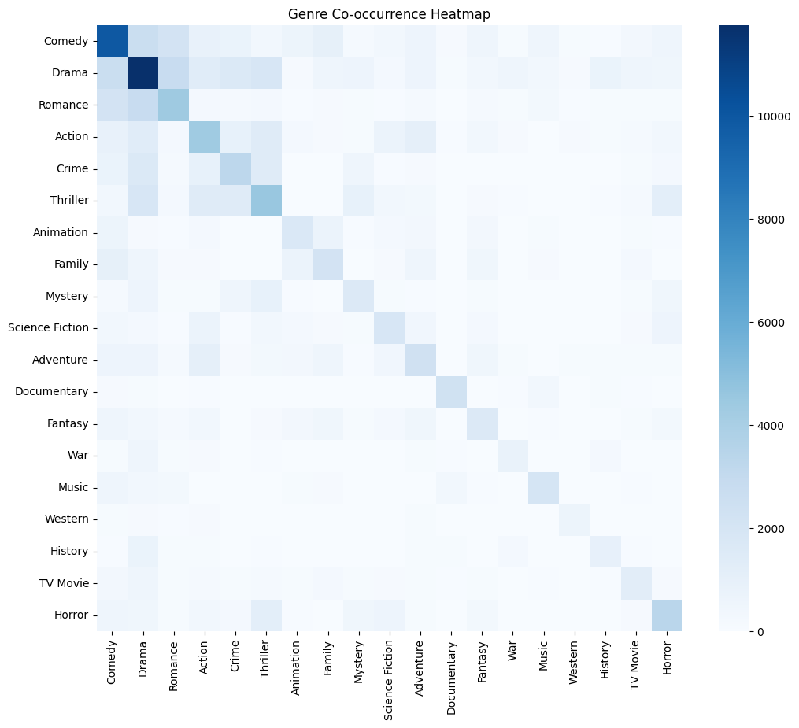
→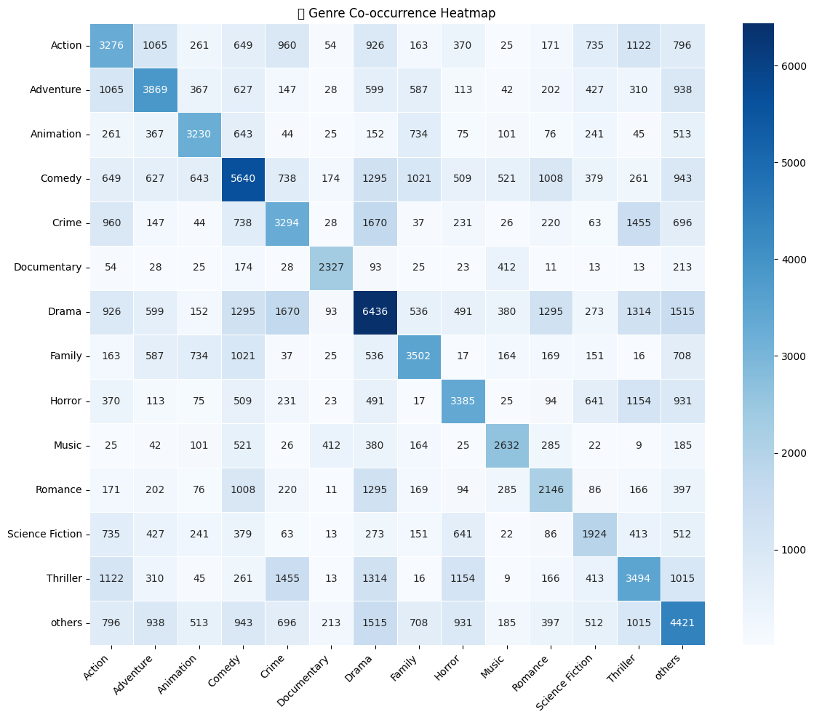
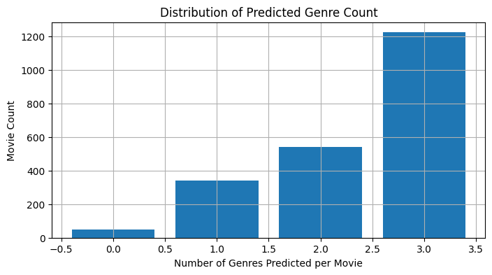
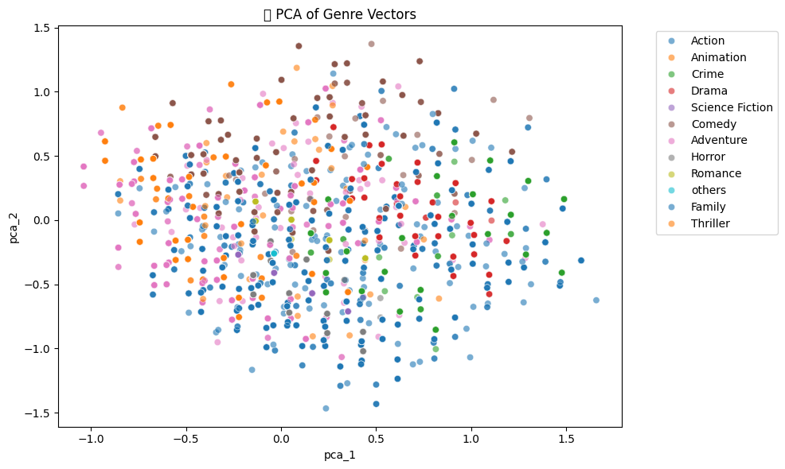
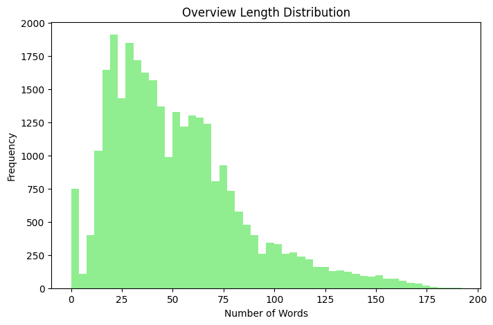
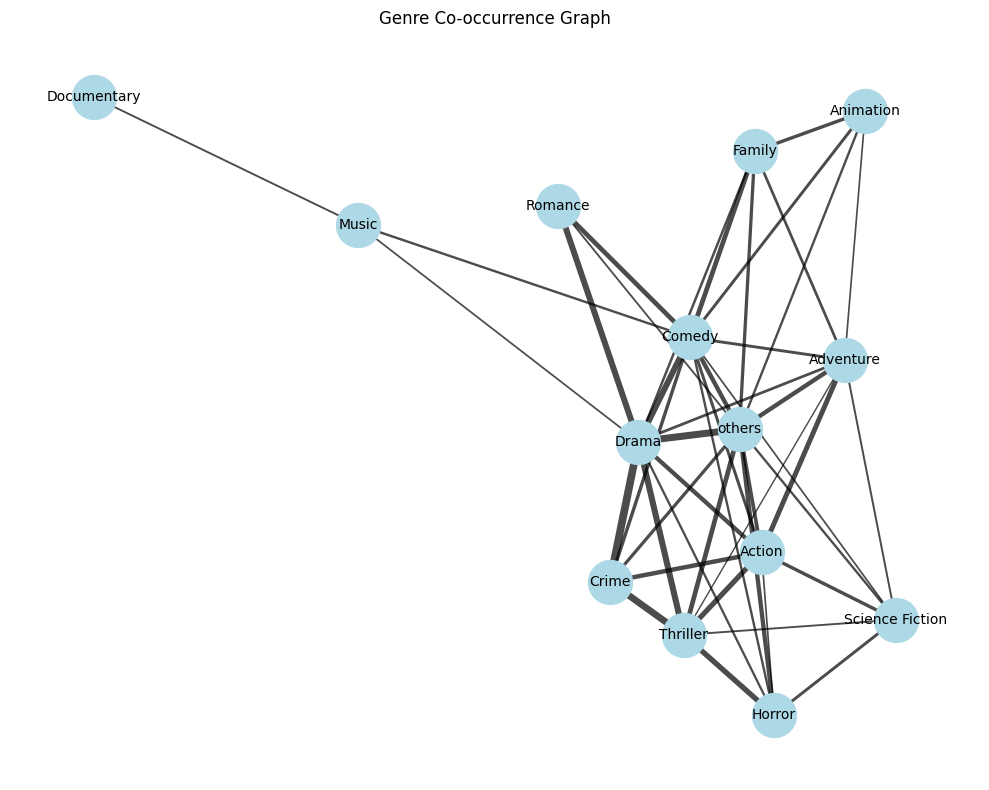
→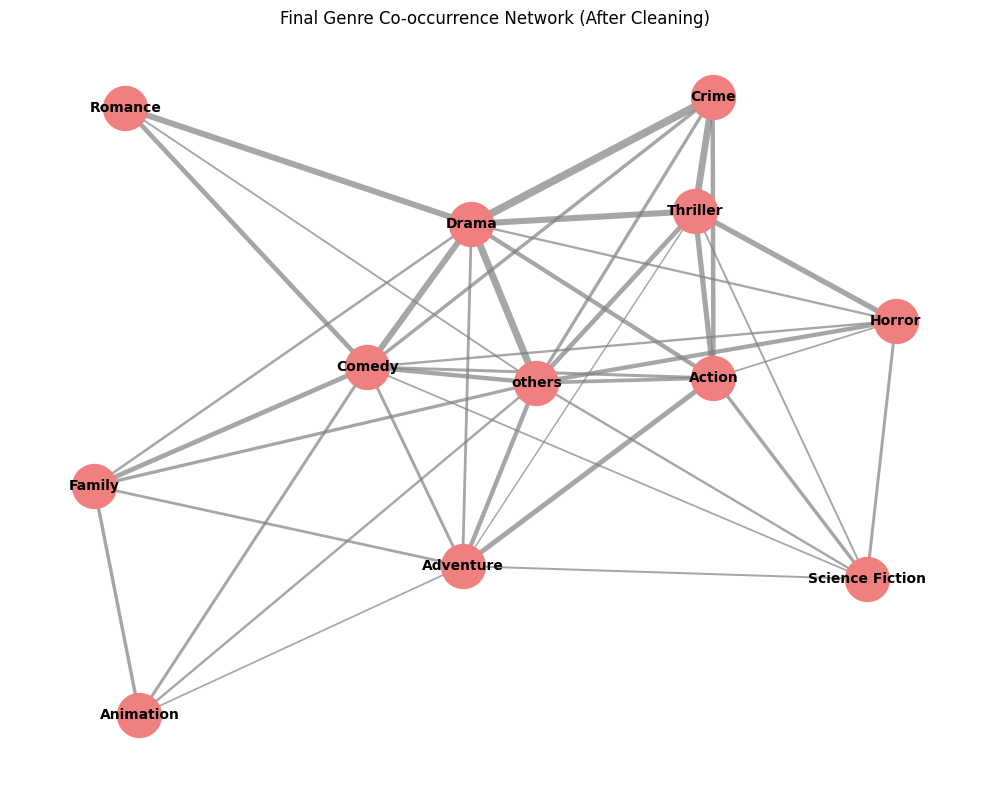
Handling Class Imbalance
Our genre distribution was highly skewed. To manage this:
- Augmentation: Downloaded additional movies for underrepresented genres
- Genre Merging: Combined very sparse classes into “Others”
- Graph-Based Pruning: Constructed a genre co-occurrence network and removed weakly connected nodes
- Label Binarization: Used
MultiLabelBinarizerto prepare label matrix (shape:(21554, 18))
Multi-Label Binarization and Final Dataset
In this task, each movie could belong to multiple genres (e.g., "Action", "Comedy", and "Adventure" together). Therefore, we approached this as a multi-label classification problem (as opposed to single-label or multi-class).
To convert genre lists into machine-readable format, we used Scikit-learn’s MultiLabelBinarizer. This created a binary matrix where:
- Each column represents a genre label (e.g., “Drama”, “Horror”)
- Each row represents a movie
- Value =
1if the movie belongs to that genre, else0
For example, a movie with genres [“Action”, “Thriller”] would have a vector like:
[0, 1, 0, 1, 0, ..., 0]After this transformation:
- Final label matrix shape:
(21554, 18) - Number of genres encoded: 18 (before final genre merging and consolidation into 12 classes)
- Final dataset used:
tmdb_cleaned_final.csv
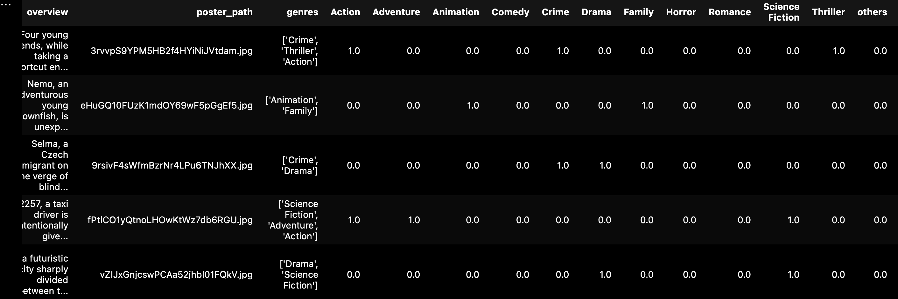
This binarized label format enabled training with BCEWithLogitsLoss and allowed per-genre metrics like precision, recall, and F1 score.
Additionally, this structure made it easier to apply:
- Stratified batching to balance genre occurrence
- Threshold tuning for genre-wise decision boundaries
- Multi-label evaluation metrics such as Hamming loss, subset accuracy, and Jaccard index
Final Dataset Overview
- Number of Samples: 21,554 movies
- Final Genres: 12, including merged “Others”
- Metadata: Clean overview + tagline, valid poster, and genre list
- Poster Storage: ~21k resized 224x224 .jpg images in posters/ folder
Text-Based Movie Genre Classification
Objective: Build a robust multi-label classifier that predicts movie genres based solely on the overview text field, using advanced NLP methods.
Dataset Used
Initially, the dataset had approximately 30,000 movies, but not all entries were complete or reliable for text-based prediction. During early experiments with models like GRU and LSTM, we observed poor performance and low F1 scores. These models struggled to learn meaningful patterns due to insufficient semantic context from the overview alone.
To improve the results, we augmented each movie’s overview with its tagline — a short descriptive sentence often associated with the movie. We concatenated the overview and tagline fields to enrich the input. However, many entries were missing taglines, so we dropped movies with null taglines to maintain consistency. This reduced the dataset size to 21,554 clean samples.
Each movie had a corresponding list of genres. These were cleaned and consolidated into 18 classes using genre merging and network analysis in the preprocessing phase. We applied MultiLabelBinarizer from scikit-learn to transform the genre list into binary vectors.
Final dataset shape: X_text.shape = (21554,), Y.shape = (21554, 18)
Tokenization
We used Hugging Face’s distilbert-base-uncased tokenizer to convert the combined text (overview + tagline) into token sequences. Steps included:
- Lowercasing and normalization
- Truncating or padding sequences to
max_length = 256 - Generating
input_idsandattention_masks - Using a custom PyTorch Dataset class to wrap tokenized inputs and labels
Model Architecture
The text classifier was built by fine-tuning a pretrained DistilBERT model. The architecture is as follows:
- Input: tokenized text passed into
DistilBERT - CLS embedding extracted from final transformer layer
- CLS →
Linear(768 → 128)→Dropout(0.3)→Linear(128 → 18)→Sigmoid - Output: 18 genre probabilities (one for each label)
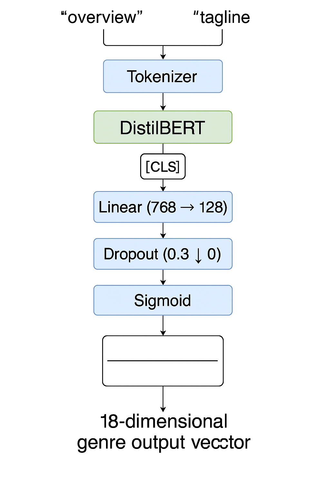
Loss Function and Optimization
BCEWithLogitsLosswas used for multi-label classification- Positive weights were calculated per genre to reduce bias toward dominant genres
- Optimizer:
AdamWwith learning rate =2e-5 - Scheduler:
CosineAnnealingLRto decay learning rate across epochs
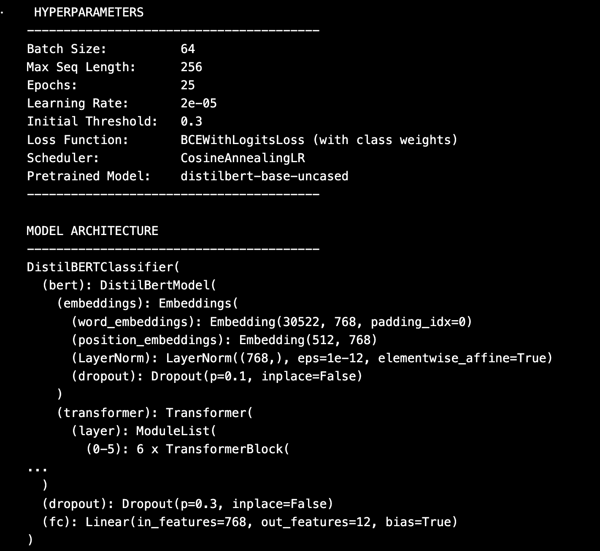
Training and Refinement
We trained the model for 25 epochs using a batch size = 64. During each epoch, we logged training and validation loss and macro F1-score. Model checkpoints were saved based on minimum validation loss.
After initial training, we reloaded the best checkpoint and continued training for 5 more epochs to refine the model. These refinement epochs used a reduced learning rate and helped improve generalization.
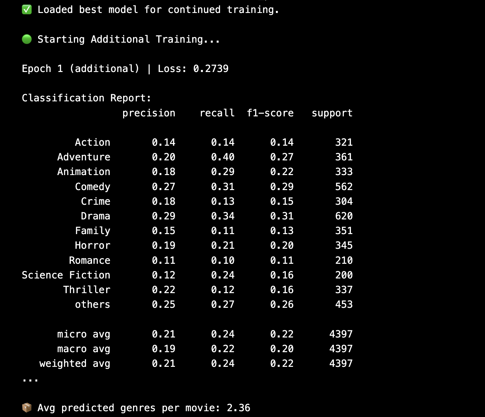
Threshold Optimization
Since this was a multi-label problem, the output layer generated probabilities. We experimented with multiple thresholding strategies:
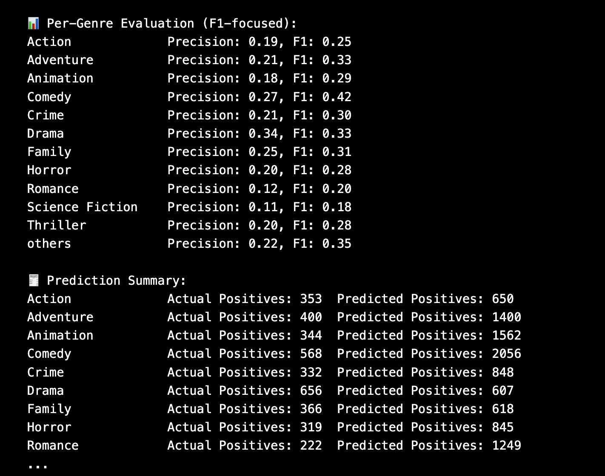
- Global Threshold: 0.5 applied to all labels initially
- Top-K Strategy: Always selecting top-3 genres with probabilities above 0.3
Evaluation Metrics
- Macro F1 Score (Validation): ~0.46
- Macro F1 Score (Test): ~0.40
- Hamming Accuracy: 0.7136
- Jaccard Score: 0.1562
- Exact Match Accuracy: 0.0213
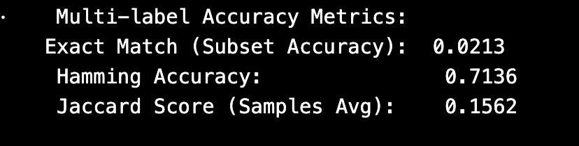
Interpretability & Verification
We conducted multiple checks to ensure the model was learning meaningful patterns:
- ROC-AUC curves for each genre on validation and test sets
- Genre-wise Confusion Matrices
- Predicted Positives vs True Positives (PP vs TP) monitoring
- Visual inspection of predicted genres for random movie samples
- F1 score per genre on test set:
- Genre-wise F1 score comparision:
- Genre Co-occurence network
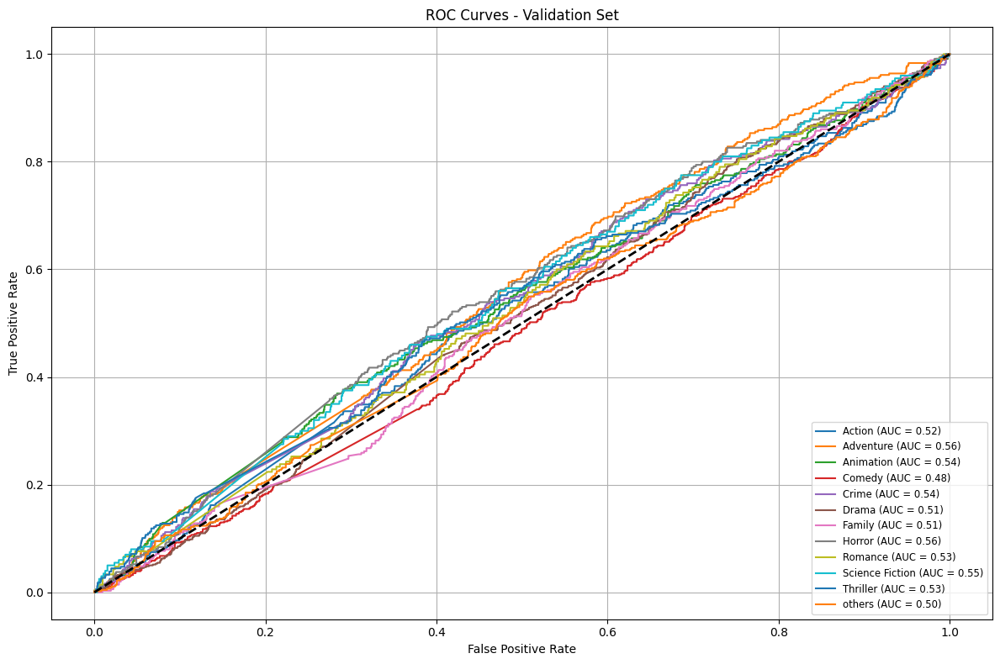
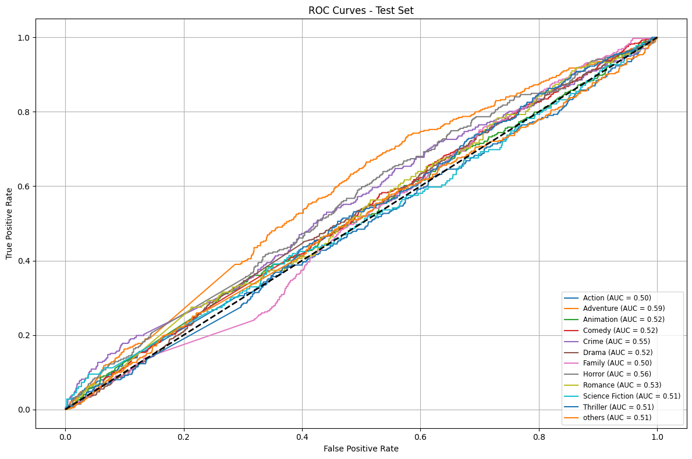
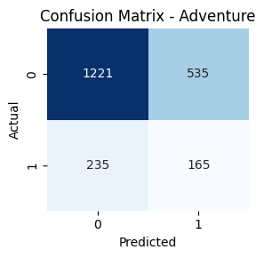
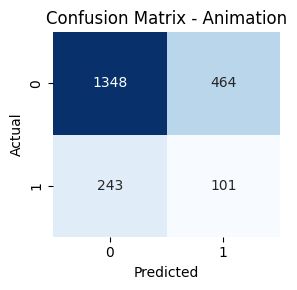
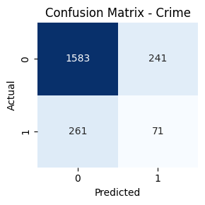
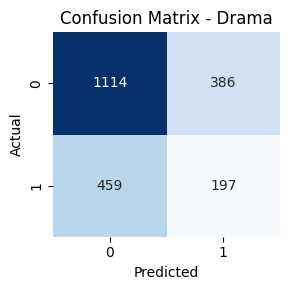
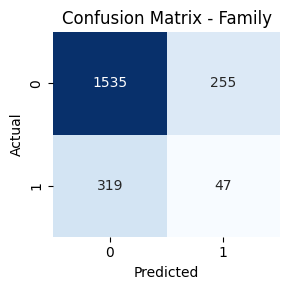

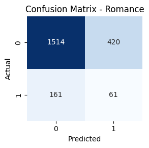
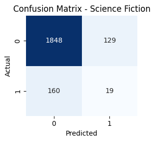
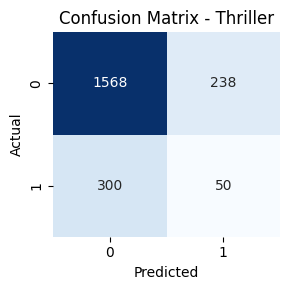
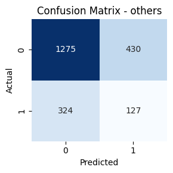
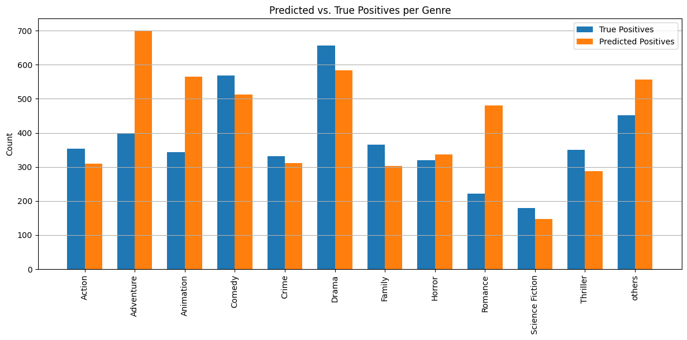
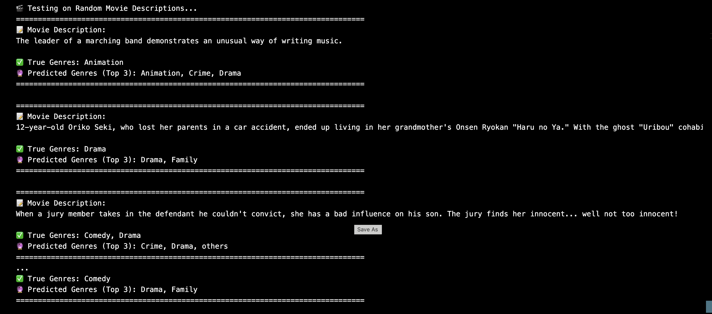
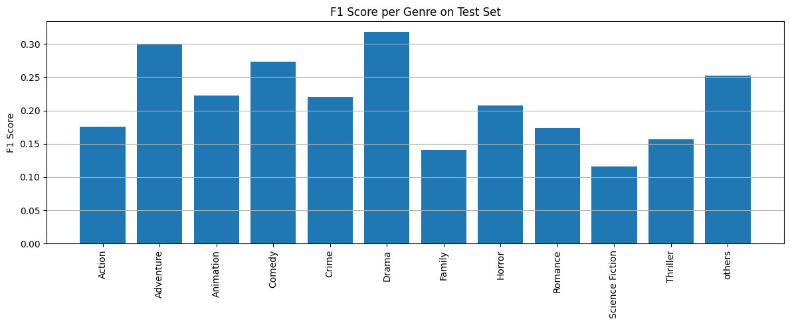
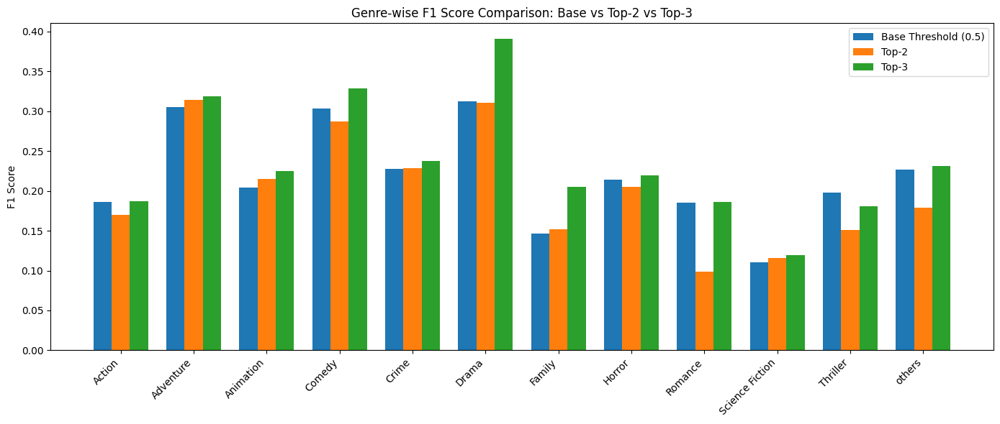
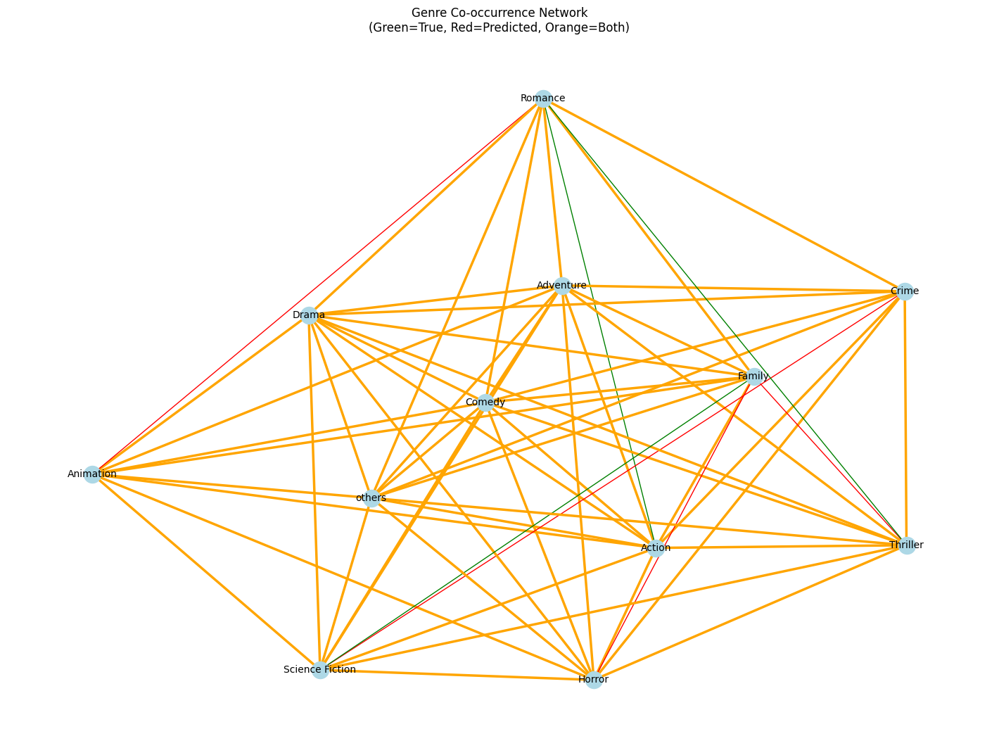
Key Takeaways
- Using just the overview wasn’t enough — adding taglines significantly improved prediction quality
- GRU and LSTM models lacked contextual depth and failed to capture genre-specific semantics
- DistilBERT offered much richer text representations with fewer parameters
- refinement training improved macro F1 over baseline
- Still, there is room to grow — especially in handling low-resource genres
Fusion-Based Movie Genre Classification
Objective: To improve genre prediction performance by integrating both text (overview + tagline) and image (poster) data into a single multimodal model.
Why Fusion?
While text-only models like BiLSTM and DistilBERT were effective in identifying genres from overviews, they often struggled with vague descriptions or when critical genre-specific terms were missing. Similarly, image-only models lacked semantic context. By combining both, we aimed to capture complementary signals—textual narrative and visual cues—thereby improving classification.
Fusion Methods: Concatenation-Based Feature Fusion
Step 1: Preparation for Input
The input image and text undergo separate preprocessing pipelines. Images are passed through a pretrained ResNet-18 model to extract high-level visual features. Simultaneously, the movie overview text is tokenized using a BERT tokenizer to produce input_ids and attention_mask required for the transformer model.
Step 2: Feature Extraction
Visual features are extracted by forwarding the image through ResNet-18, where the final classification layer is replaced with a Linear layer to obtain a 256-dimensional feature vector.
Text features are extracted by passing the tokenized text through the BERT model. The embedding corresponding to the [CLS] token (also called pooler_output) is taken, which is a 768-dimensional representation. This is then passed through another Linear layer to reduce it to a 256-dimensional text feature vector.
Step 3: Feature Fusion
The 256-dimensional image feature and 256-dimensional text feature are concatenated along the feature dimension. This results in a 512-dimensional combined feature vector that holds both visual and semantic information from the poster and overview respectively.
Step 4: Joint Classification
The fused 512-dimensional feature vector is then passed through the classification head for multi-label prediction. The classification head includes:
- A
Linear(512 → 128)layer ReLUactivationDropoutto reduce overfitting- Final
Linear(128 → 18)output layer followed by aSigmoidactivation
The sigmoid layer allows independent probabilities for each genre, making it suitable for multi-label classification where genres are not mutually exclusive.
Dataset Preparation (from fusion_data_cleaning.ipynb)
- Started with the cleaned CSV containing
overview,tagline,genres, andposter_path. - Dropped rows missing either taglines or posters.
- Performed exploratory validation to ensure each row had valid and accessible data for both modalities.
- Stratified multi-label splitting was used to preserve genre distribution across train, val, test sets.
- Final dataset shape: 21,554 rows, 18 binarized genres.
Preprocessing Steps
- Text: Overview and tagline concatenated → tokenized using DistilBERT tokenizer with
max_length=128→ padded & truncated → returned asinput_idsandattention_mask. - Image: Posters resized to 224x224 → converted to tensor → normalized using ImageNet stats. Augmentations included:
ColorJitter,RandomAffine, andHorizontalFlipduring training only
- Custom PyTorch Dataset: Returns a tuple of (tokenized text, image tensor, genre labels).
Model Architecture (from fusion_code.ipynb)
- Text Path: DistilBERT → Extract [CLS] embedding → Linear(768→256)
- Image Path: ResNet18 (pretrained) → AdaptiveAvgPool2d → Flatten → Linear(512→256)
- Fusion: Concatenated vector [256+256] → Linear(512→128) → Dropout(0.3) → Linear(128→18) → Sigmoid
- Output: Probabilities across all 18 genres (multi-label)
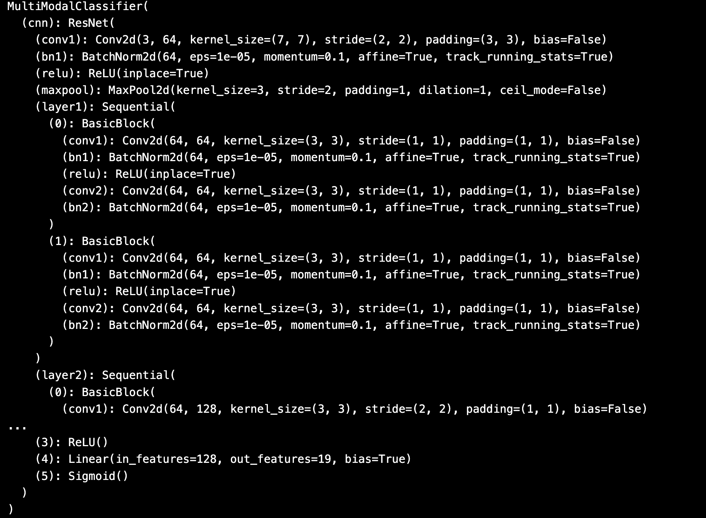
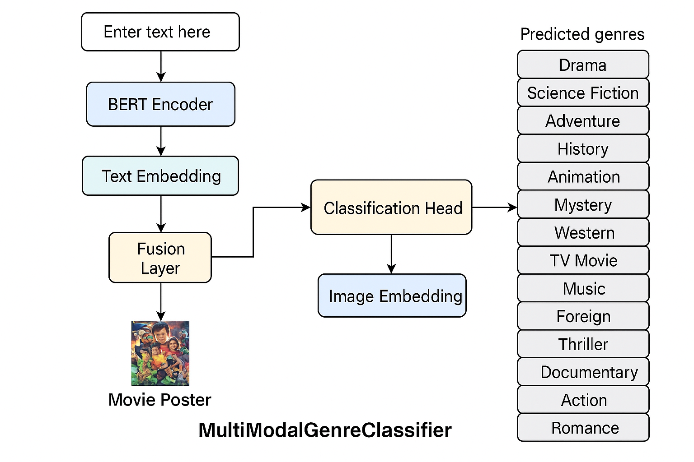
Training Configuration
The model performed movie genre classification by uniting ResNet18 for image feature extraction with BERT for text feature extraction. Both modalities share a classifier to which their respective features have been joined through vector concatenation with dimension 256. During training the model implemented Binary Cross Entropy loss combined with Adam optimizer for 11 epochs. After training the model showed the improvement very progressively when coming to its accuracy , precision and recall metrices through its training epochs which will be overall an accuracy measure around 76.7% adn with the precision of 92% and recall score of 87% and f1 score around 92.47% . which will reflect good multi label classification abilities.
- Loss: BCEWithLogitsLoss (without class weights)
- Optimizer: Adam (learning rate = 1e-4)
- Epochs: 11 total
- Batch Size: 32
- Validation macro F1 monitored manually to determine best epoch
Results
- Validation F1 Score: ~0.92
- Test F1 Score: ~0.90
- Precision: ~92%, Recall: ~87%
- Test Accuracy: ~61%
- Average genres per movie: 2.36
- Strategy used: Top-3 predicted genres with probability ≥ 0.3
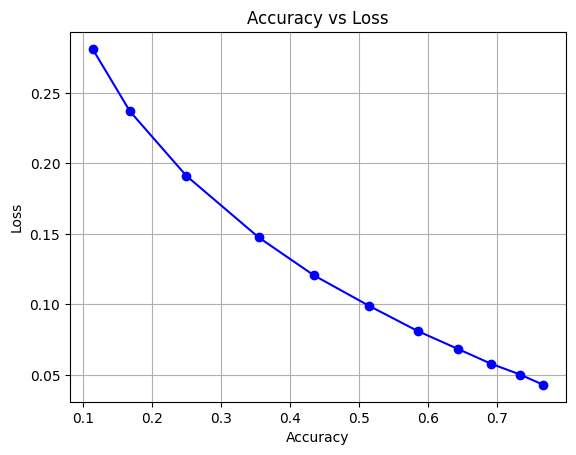
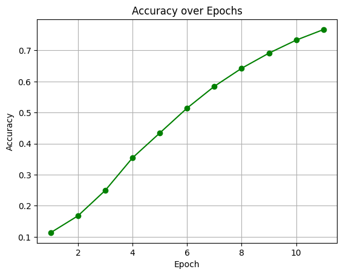
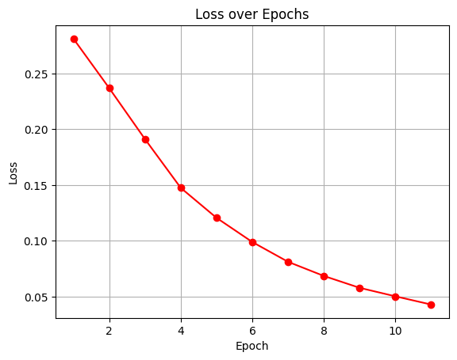
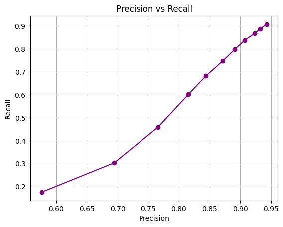
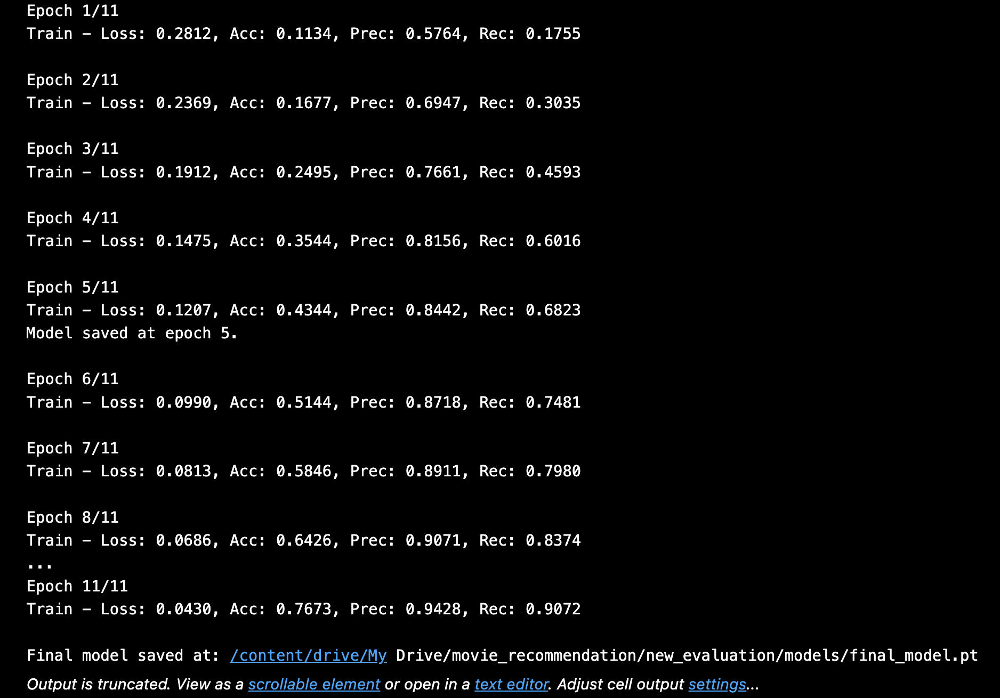
Confusion Matrix & Genre-wise Behavior
Genres such as Comedy, Drama, and Action had high true positive rates. In contrast, classes like TV Movie, Western, and War had lower recall. Fusion helped balance performance across frequent and rare genres.
Evaluation Strategy
The evaluation model achieved reasonable generalization results when tested on the test set. The model demonstrates a moderate average error rate against unseen data because its test loss reaches 0.2338. The model produced 61.00% accuracy which indicates it managed to predict genres effectively for more than fifty percent of testing examples. The model exhibits better precision than recall when handling multi-label classification problems due to its 67% precision and 63% recall scores on the test set. This model shows adequate predictive power nonetheless it needs enhancement particularly targeting improved recall for better genre identification across different test samples.
- Macro F1, Hamming accuracy, and Jaccard used for multi-label evaluation and results are:
- Subset accuracy used for strict correctness analysis
- Threshold tuning and confusion matrix plotting helped refine final model
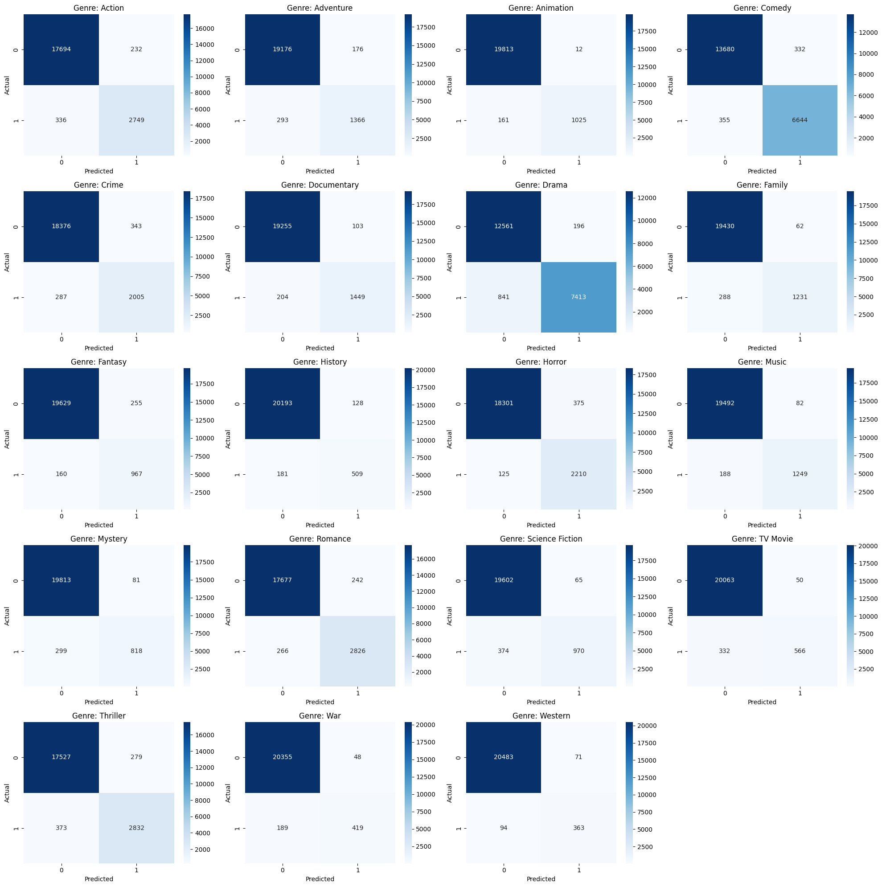
Inference Script (fusion_inference__script.ipynb)
The fusion inference script enables real-time prediction of movie genres using both a poster image and its textual overview. It encapsulates the exact data processing pipeline used during training to ensure consistency and reproducibility.
Core Inference Pipeline
- Model Loading:
Loads the best-performing trained modelfinal_model.ptand sets it to evaluation mode usingmodel.eval(). It also loads theMultiLabelBinarizerinstance to reverse-map genre predictions. - Text Tokenization:
The movieoverviewis tokenized using the samedistilbert-base-uncasedtokenizer from HuggingFace Transformers.- Max length = 128
- Padding and truncation are applied
- Converted to PyTorch tensors for GPU/CPU inference
- Image Preprocessing:
The poster is opened using PIL and transformed using:Resize(224, 224)ToTensor()Normalize(mean=[0.485, 0.456, 0.406], std=[0.229, 0.224, 0.225])
- Forward Pass:
The script combines text and image embeddings, passes them through the model, and applies asigmoidactivation to get probabilities across 18 genres. - Decoding:
Final genre indices are mapped to human-readable labels using the savedMultiLabelBinarizer.classes_list.
Sample Usage
python fusion_inference.py \
--image_path posters/sample.jpg \
--overview "A young boy discovers he has magical powers and joins a hidden wizarding school."Output
- Returns a list of top 3 predicted genres such as:
['Fantasy', 'Adventure', 'Family'] - Genres are printed to console and optionally saved with their probabilities
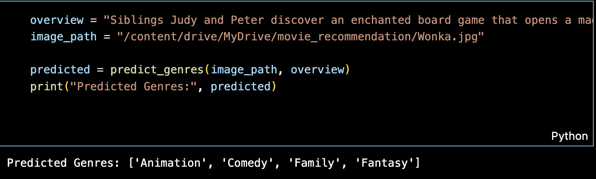
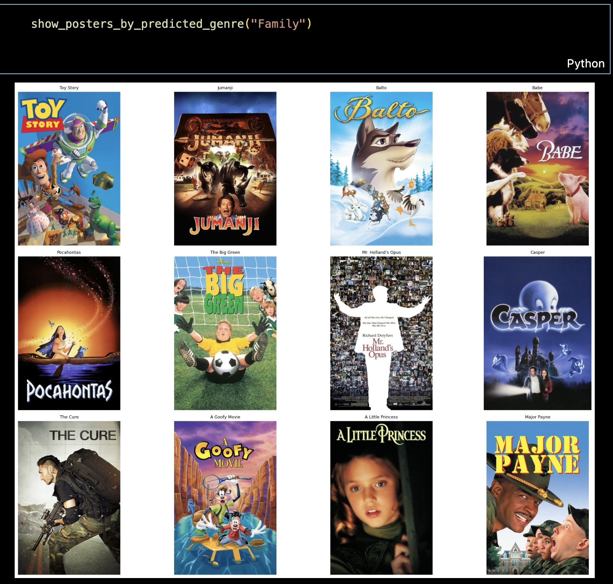
Design Decisions & Robustness
- Handles missing or corrupt poster files with error messages
- Validates text length and padding before tokenization
- Includes batch dimension reshaping to support both single and batch mode
- GPU acceleration used if available, else defaults to CPU
Extensibility Tips
- Can be extended into a Flask/FastAPI web server with UI uploads
- Post-processing can be added to filter low-confidence predictions
- Could return genre-specific confidence bars or tag visual markers on UI
Key Learnings
- Fusing images and overview+tagline helped the model infer genre better for edge cases.
- Image augmentations improved generalization for posters with minimal visual clues.
- Tagline addition gave rich textual signals when overviews were generic.
- Fusion was critical for difficult-to-identify genres like Fantasy and Sci-Fi.
Conclusion
The multimodal fusion model demonstrated significant improvement over text-only models, showing how visual and textual information complement each other in genre classification. It closely mimics how human viewers intuitively predict genres using both narrative and visuals.
Comparison & Future Work
Model Comparison
Text-Only Model (DistilBERT):
- Validation Macro F1: ~0.46
- Test Macro F1: ~0.40
- Precision and recall moderate across genres
- Used only movie overviews (text)
Fusion Model (DistilBERT + ResNet18):
- Validation Macro F1: ~0.92
- Test Macro F1: ~0.90
- High precision (~92%) and recall (~87%)
- Used both movie overviews and posters (text + image)
Conclusion
The text-only model helped us understand how well genres can be predicted from descriptions alone. However, some genres were hard to identify using text. So, we fused image and text features to improve performance. The fusion model performed much better overall, capturing both visual and semantic signals for genre classification.
Future Work
- Use better image models like Vision Transformers
- Try advanced fusion strategies like attention-based merging
- Fine-tune the BERT model for improved text understanding
- Build a real-time web app for automatic genre prediction
- Explore sub-genre or multi-level genre prediction
Reproducibility & Instructions
GitHub Repository: https://github.com/adullagayathri/multimodal-movie-genre-prediction.git
Setup Instructions
- Clone the repository:
git clone https://github.com/adullagayathri/multimodal-movie-genre-prediction.git - Navigate to the project folder:
cd multimodal-movie-genre-prediction - Create a virtual environment (recommended):
python -m venv venv && source venv/bin/activate - Install dependencies:
- Download or generate the dataset (instructions in
data/README.md) and download tmdb_cleaned_final.csv and posters folder - Train text model: run data_text_model.ipynb
- Train fusion model:run fusion_data_cleaning.ipynb then continued by fusion_code.ipynb followed by inference_fusion.ipynb
- Evaluate the model and check best models of both in your same folder and verify results
- To view website locally (optional):
cd website
Openindex.htmlin browser
References
- Devlin et al. (2019). BERT: Pre-training of Deep Bidirectional Transformers for Language Understanding. [Link]
- Sanh et al. (2019). DistilBERT: smaller, faster, cheaper and lighter. [Link]
- He et al. (2016). Deep residual learning for image recognition. [Link]
- Baltrušaitis et al. (2018). Multimodal Machine Learning: A Survey. [Link]
- Zhang & Zhou (2014). A review on multi-label learning algorithms. [Link]
Team Contributions
- Gayathri Adulla: Led dataset preparation, exploratory analysis, and full development of the text-based model (LSTM, GRU, DistilBERT).
- Uma Maheshwar Reddy: Led the fusion model architecture, training, and evaluation combining text and image embeddings.
- Both: Collaborated on designing, building, and deploying the project website with all results and explanations integrated.